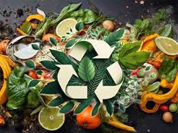
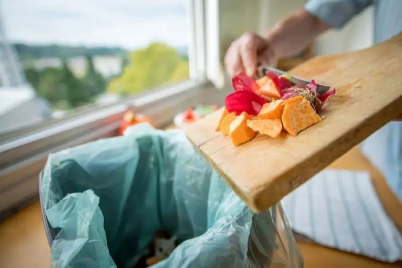
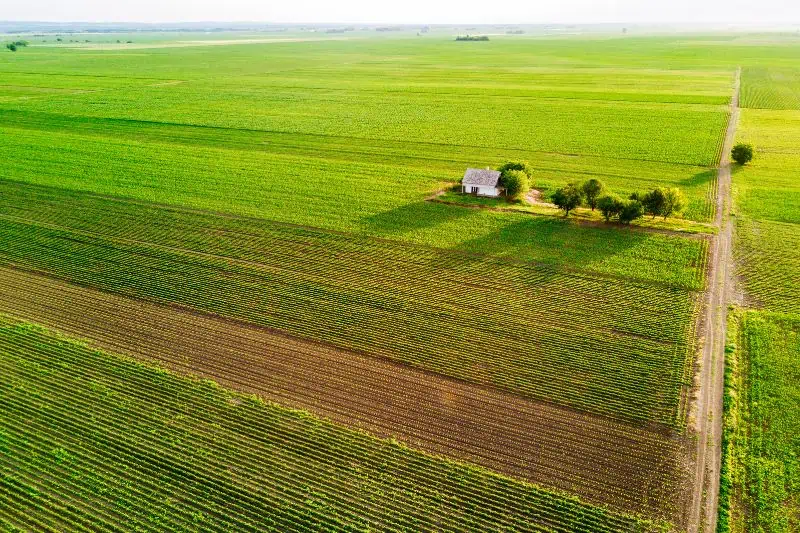

Roughly one-third of all food produced worldwide is wasted. Where income is low, waste is generally unintentional and occurs on farms or during storage or distribution. In regions of higher income, food waste dominates further along the supply chain. Retailers and consumers reject food based on bumps, bruises, and coloring, or simply order, buy, and serve too much.
When food is wasted, all the energy, resources, and money that went into producing, processing, packaging, and transporting it are wasted, too. Producing uneaten food squanders a whole host of resources—seeds, water, energy, land, fertilizer, hours of labor, financial capital—and generates greenhouse gases at every stage. The food we waste is responsible for roughly 8 percent of global emissions.
Project Drawdown’s Reduced Food Waste solution involves minimizing food loss and wastage from all stages of production, distribution, retail, and consumption. It replaces current reported trends in food waste by region.
We can reduce waste in many ways. In lower-income countries, improving infrastructure for storage, processing, and transportation is essential. In higher-income regions, major interventions are needed at the retail and consumer levels. National food-waste targets and policies can encourage widespread change. Beyond addressing emissions, these efforts can also help to meet future food demand.
If measures are taken to reduce food waste by improving storage and transport systems, generating public awareness, and changing consumer behavior, this solution could lead to substantial reductions in waste and carbon emissions.
WHAT IS FOOD WASTE AND FOOD LOSS?
FOOD WASTE is the intentional discarding of edible items, mainly by retailers and consumers. This mainly occurs in developed regions. About 1.3 billion tons of food is wasted globally per year. This amounts to about one third of all food being produced for human consumption.
FOOD LOSS is defined as ‘the decrease in quantity or quality of food.’ Food waste is part of food loss and refers to discarding or alternative (nonfood) use of food that is safe and nutritious for human consumption along the entire food supply chain, from primary production to end household consumer level
Various Causes of Food Waste
1. Lack of Appropriate Planning
One of the top contributors to food wastage is because of a lack of appropriate planning on the consumer’s part.
Sometimes people buy lots of food without appropriately planning when and how the food will be prepared for consumption.
Coupled with the contemporary schedules of work and appointments, people, therefore, tend to change food preparation plans or fail to remember to use them on time.
At times most people are not in control, leading to the expiry of the foods, after which they are wasted.
But that’s not the only way improper planning contributes to food wastage. You see, again, due to a lack of appropriate planning, people have poorly prepared food that doesn’t taste great. It all ends up as waste.
2. Purchase and Preparation of Excess Food
Most of the time, food is wasted by purchasing, preparing, or serving more than we need. When this happens, the excess food on the plate or cooking pot goes to waste.
Alternatively, the partially used food is sometimes put at the back of the fridge and never reused. The same applies to excess purchases that pass their expiration dates and therefore look, taste, and smell terrible. At the end of it all, all the excess ends up as waste food.
3. Errors in Industrial Processing and Keeping up With Food Safety Policies
Another significant driving factor for food wastage is the protocol on food safety. The food safety protocols give no room for error in industrial processing or any other compromise that diminishes the final food product quality.
As such, the confusions and errors that occur during industrial food processing mean that all food items that don’t meet the set standards are wasted.
Food processing companies must comply with high food safety regulations and thus establish no error margins.
In complying with the food safety policies, the companies in the sector waste lots of food since any small error means the food will be rejected, even if it’s simply due to imperfection in appearance or shape.
Overcooking, production trials, packaging defects, trial runs, and wrong sizes and weights result in imperfection and the eventual rejection of the foods.
4. Over-preparation of Food in Restaurants, Hotels, and the Foodservice Industry
Most restaurants, hotels, and the food service industry alike have a tendency to over-preparing/producing food.
While the intention is good, especially in anticipation of high customer volume and the ability to not run out of the menu, over-preparation often leads to the wastage of all the unsold food.
DC Central Kitchen, committed to reducing food wastage, points out that overproduction in the food service industry is the leading cause of food wastage.
Since the food service operations cannot quantify the amount of food consumed on average, the kitchens keep producing amounts thought to be enough but most of it is unnecessary.
Besides, some managers believe producing food in large batches minimizes costs, but in actual fact, it results in more waste than cook-to-order preparation or cooking in small batches.
Effects of Food Waste
Food waste’s consequences are severe: It depletes natural resources, degrades the environment, and constrains efforts to increase access to healthy diets for low-income populations, including others.
Some of the effects of food waste include the following;
1. Biodiversity Loss
Food wastage impacts biodiversity loss at a global level. Farmers have increasingly invaded wild areas to maximize agricultural yields in search of more fertile lands, leading to the extinction of different species.
This is because practices such as slash and burn, deforestation, and conversion of wild areas into farmlands have destroyed the natural habitats for birds, fish, mammals, and amphibians.
Agricultural practices such as mono-cropping have also compounded biodiversity loss.
The mass rearing of livestock for consumption and the use of pesticides in crop production has also significantly contributed to;
Nitrogen, phosphorous, and chemical pollution in streams, rivers, and coastal waters, thus affecting marine life.
2. Wastage of 1/3 of the World’s Fertile Land Regions
According to research, the produced but unconsumed food accounts for approximately 1.4 billion hectares, constituting almost 1/3 of the planet’s agricultural land.
By looking at this from a well thought analytical angle, the world is wasting 30 percent of the world’s fertile land, which could be used for other meaningful purposes such as environmental research.
.jpg) FOOD WASTE is the intentional discarding of edible items, mainly by retailers and consumers. This mainly occurs in developed regions. About 1.3 billion tons of food is wasted globally per year. This amounts to about one third of all food being produced for human consumption.
FOOD WASTE is the intentional discarding of edible items, mainly by retailers and consumers. This mainly occurs in developed regions. About 1.3 billion tons of food is wasted globally per year. This amounts to about one third of all food being produced for human consumption..jpg) Most restaurants, hotels, and the food service industry alike have a tendency to over-preparing/producing food.
Most restaurants, hotels, and the food service industry alike have a tendency to over-preparing/producing food.